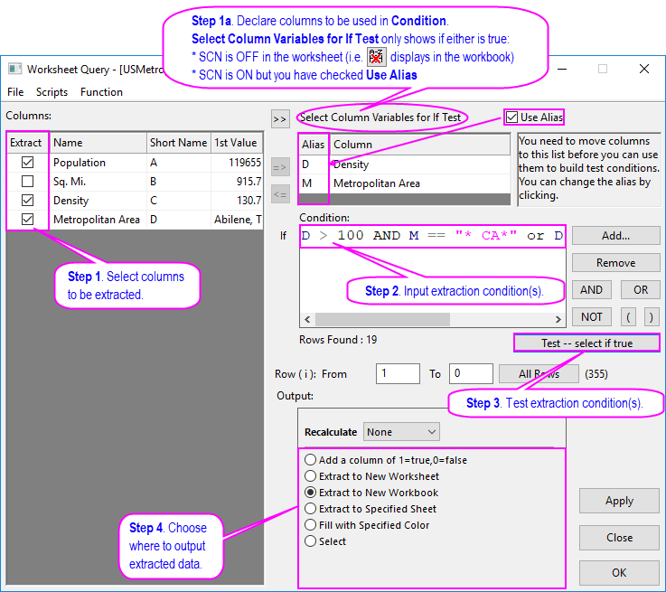
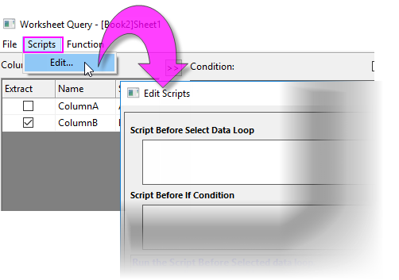
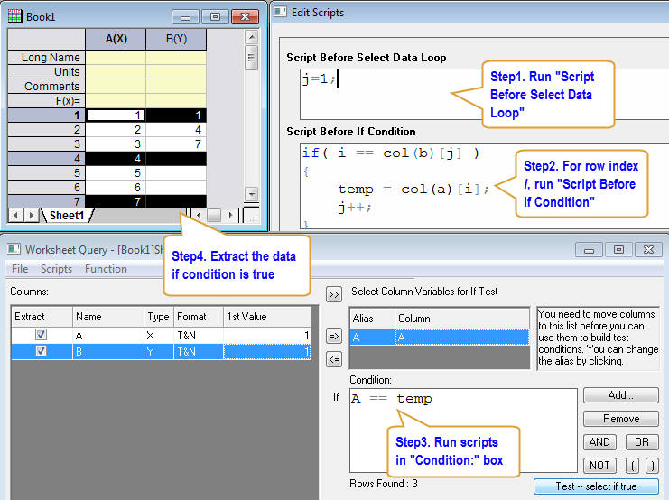
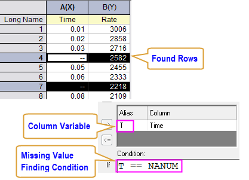
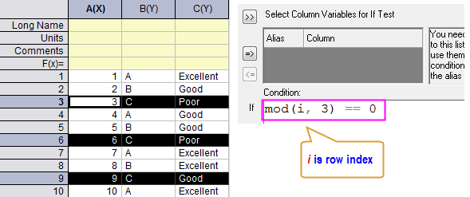
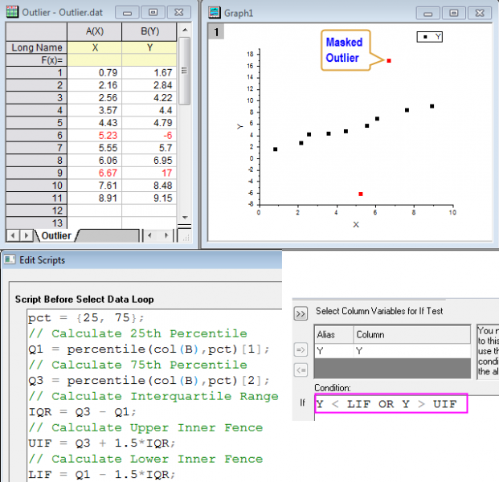

Daten aus einem Arbeitsblatt extrahieren - Schnellstart
Wks-Query-QS
Der Dialog Daten aus Arbeitsblatt extrahieren wird für zeilenweise Auswahl, Extraktion oder Färbung der Arbeitsblattdaten verwendet gemäß einem benutzerdefinierten logischen Ausdruck.
- Aktivieren Sie das Arbeitsblatt und wählen Sie im Hauptmenü Arbeitsblatt: Daten aus Arbeitsblatt extrahieren.
Bedienelemente des Dialogs Einstellungen
Das folgende Bild zeigt die Reihenfolge, in der Sie die Bedienelemente im Dialog Daten aus Arbeitsblatt extrahieren festlegen. Beachten Sie, dass, wenn eine der folgenden Aussagen WAHR ist, Sie Schritt 1a durchführen müssen:
-
- Die vereinfachte Zellennotation ist in der Arbeitsmappe DEAKTIVIERT.
- Die vereinfachte Zellennotation ist in der Arbeitsmappe AKTIVIERT, aber Sie haben das Kontrollkästchen Alias verwenden in der oberen rechten Ecke des Dialogs aktiviert.
- 
| Hinweis:Für die im linken Bedienfeld horizontal aufgeführten Informationen der Spalten können Sie mit der rechten Maustaste auf eine beliebige Stelle innerhalb dieses Bedienfelds klicken, um die Elemente auszuwählen, die Sie zeigen möchten, wie Spaltenindex, Kurzname oder Langname der Spalten. |
Hinweise zur vereinfachten Zellennotation SCN, Verwendung des Alias und Benennung von Spalten
Dieses Hilfsmittel geht der Einführung der vereinfachten Zellennotation (SCN) in Origin 2017 voraus. Zuvor war die Verwendung eines Aliases zum Darstellen der Datenspalte eine effiziente Alternative zur Verwendung der eigenlichen Spaltennamen. Aliase konnten ein einzelner Buchstabe sein, während Referenzen die Verwendung der Funktion col() sogar nur für Spaltenkurznamen notwendig machten (z. B. "M<=0" vs. "Col(A)<=0"). Die Einführung von SCN bedeutete, dass Sie nicht mehr die Funktion col() verwenden mussten, um den Spaltenkurznamen im Dialog Werte setzen oder in den Zellenformeln zu umschließen.
Seit Origin 2019b können Sie den Spaltenkurznamen direkt in Ihrem If-Ausdruck für die Funktion Daten aus Arbeitsblatt extrahieren verwenden, wen die SCN EINgeschaltet ist (Standard) und Alias verwenden deaktiviert. Diese Änderung stellt einfach mehr Optionen zum Erstellen eines If-Ausdrucks zur Verfügung. Es gibt keinen "richtigen" Weg zum Erzeugen eines Ausdrucks. Folgendes kann Ihnen aber vielleicht helfen zu entscheiden, welche Methode für Sie am besten geeignet ist:
- Wenn Sie die SCN in der Arbeitsmappe AUSgeschaltet haben (Sie haben z. B. eine ältere Projektdatei mit benutzerdefinierten Spaltenkurznamen), können Sie weiterhin so arbeiten wie bisher. Das Hilfsmittel Daten aus Arbeitsblatt extrahieren sieht aus und funktioniert weiterhin, wie Sie es kennen.
- Wenn Sie die SCN in der Arbeitsmappe EINgeschaltet haben (der Standard für alle neuen Arbeitsmappe in Origin-Version 2017 oder neuer), sehen Sie ein Kontrollkästchen Alias verwenden in der oberen rechten Ecke von Daten aus Arbeitsblatt extrahieren. Wenn Sie mit dem Hilfsmittel Daten aus Arbeitsblatt extrahieren vertraut sind und die Alias-Option mögen, können Sie Alias verwenden aktivieren und den Dialog verwenden, wie Sie es in den Versionen vor Origin 2019b getan haben.
- Wenn Sie die SCN in der Arbeitsmappe EINgeschaltet haben und es vorziehen, Spaltenkurznamen oder -langnamen direkt in Ihrem If-Ausdruck zu verwenden, ohne ein Alias zu deklarieren, dann belassen Sie Alias verwenden deaktiviert und verwenden Sie die folgenden Formen:
-
- Verwenden Sie "A" anstatt "col(A)". Ausdrücke, die "col(A)" verwenden, funktionieren, die Verwendung der Funktion col() ist jedoch unnötig.
- Um Spaltenlangnamen in Ihrem Ausdruck zu verwenden, müsse Sie sie mit der Funktion col() umschließen. Wenn der Langname Leerzeichen enthält, müssen Sie den Langnamen mit doppelten Anführungszeichen umschließen (z. B. col("Population Density")<=100).
- Wenn Sie die Schaltfläche Hinzufügen... verwenden möchten, um Bedingungen zu Ihrem If-Ausdruck hinzuzufügen, aktivieren Sie Alias verwenden, da Hinzufügen... das übernimmt, was Sie im Feld Spaltenvariablen für If-Abfrage wählen markiert haben.
Einfaches Tutorial
- Verwenden Sie den Importassistenten zum Importieren der Datei \\Samples\Data Manipulation\US Metropolitan Area Population.dat. Das Zielarbeitsblatt enthält vier Spalten: Population, Sq.Mi., Density und Metropolitan Area.
- Wählen Sie im Menü, um den Dialog Daten aus Arbeitsblatt extrahieren zu öffnen.
- Wenn die SCN aktiviert ist oder Sie Alias verwenden deaktiviert haben, überspringen Sie diesen Schritt. Wenn die SCN deaktiviert ist oder wenn Sie das Kontrollkästchen Alias verwenden aktiviert haben, halten Sie die Strg-Taste gedrückt und wählen Sie Density und Metropolitan Area im Feld Spalten:. Klicken Sie auf die Schaltfläche =>, um diese Spalten in das Feld Spaltenvariablen für If-Abfrage wählen zu verschieben. Beachten Sie, das die Aliase D und M den Spalten jeweils zugeordnet werden.
- Deaktivieren Sie das Kontrollkästchen vor Sq.Mi. im Feld Spalten:, so dass diese Spalte nicht im extrahierten Ergebnis enthalten ist.
- Geben Sie EINE der folgenden Formeln im Feld Bedingung ein, abhängig davon, ob das Kontrollkästchen Alias verwenden aktiviert ist. Hinweis: Sie können auf die Schaltfläche AND klicken, anstatt A-N-D über die Tastatur einzugeben:
- D > 100 AND M == "* CA*" oder D > 100 AND M = "* CA*" (SCN AUS oder Alias verwenden aktiviert, Alias zur Darstellung der Daten verwenden)
- D > 100 AND D == "* CA*" oder C > 100 AND D = "* CA*" (SCN EIN oder Alias verwenden deaktiviert, Kurzname zur Darstellung der Daten verwenden)
- In beiden Fällen sucht diese Bedingung nach Bevölkerungsdichten > 100 für alle Bereiche in Kalifornien ("CA"). Beachten Sie, dass dieses Hilfsmittel das Platzhaltersymbol * innerhalb der Zeichenketten unterstützt.
- Klicken Sie auf die Schaltfläche Test -- Auswählen, falls wahr. Beachten Sie, dass die Anzahl der gefundenen Zeilen unter dem Feld Bedingung aktualisiert und einige Zeilen in dem Arbeitsblatt markiert wurden.
- Wählen Sie Auto in der Auswahlliste Neu berechnen, um die Ergebnisse automatisch zu aktualisieren, wenn die Daten sich ändern.
- Wählen Sie die Option In neues Arbeitsblatt extrahieren im Feld Ausgabe: und klicken Sie dann auf die Schaltfläche OK. Die extrahierten Ergebnisse werden in einem neuen Arbeitsblatt in der Quellarbeitsmappe gespeichert.
Was kann ich in das Textfeld Bedingung eingeben?
Sie können Spaltennamen oder Aliase und relationale Operators (>, <=,�!= etc.), arithmetische Operatoren (+, -, *, /, ^) und logische Operatoren (&& (AND), || (OR)) verwenden, um Ihre Bedingung zu erstellen (siehe diese Tabelle). Sie können Standardfunktionen mit dem Menü Funktion einfügen; oder Sie können eine benutzerdefinierte Funktion erstellen.
Numerische Daten
| Beispiele |
Beschreibungen |
| T > 0 |
Um Zeilen mit Werten der Spalte mit dem Alias "T" zu extrahieren, die größer als 0 sind. |
| col("Population Density") > 1000 |
Um Zeilen mit Werten des Spaltenlangnamens "Population Density" zu extrahieren, die größer als 1000 sind. |
| A > 0 |
Um Zeilen mit Werten des Spaltenlangnamens "A" zu extrahieren, die größer als 0 sind.
Hinweis: Die folgende Syntax ist auch möglich: col(A) > 0 oder col(index) > 0 (wobei index die Spaltenindexnummer ist).
|
| A.top(10) |
Um Zeilen nach den 10 größten Werten unter dem Spaltenkurznamen "A" zu extrahieren. |
| N^2 != F |
Um Zeilen mit dem Quadrat der Werte in Spalte "N" (Alias oder Kurzname) zu extrahieren, die nicht gleich den Werten in Spalte "F" (Alias oder Kurzname) sind. |
| A != -- (oder A != NANUM) |
Um Zeilen zu extrahieren, die keine fehlenden Werte und keine Textzeichenketten in Spalte "A" (Alias oder Kurzname) enthalten. |
| mod(i, 3) == 0 |
Um jede 3. Zeile für alle ausgewählten Zeilen mit Hilfe der Funktion mod() zu extrahieren, wobei "i" die Zeilenindexvariable ist. |
Zeichenkettendaten
| Beispiele |
Beschreibungen |
| B == "*CA*" (oder B = "*ca*") |
Um Zeilen zu extrahieren, die "CA" innerhalb der Zeichenkette in einer Zelle in der Spalte mit dem Alias oder Kurznamen "B" enthalten. Beachten Sie, dass Platzhaltersymbole wie * (Zeichenkette aus Buchstaben) und ? (einzelner Buchstabe) unterstützt werden und bei der Zeichenkettensuche Groß- und Kleinschreibung nicht berücksichtigt wird. |
| NOT(A="Tom" OR A="James") |
Um alle Zellen außer denen zu extrahieren, die "Tom" oder "James" in Spalte A enthalten. |
|
A != NANUM
OR A == "--"
OR A == ""
|
Um Zeilen, die numerische Daten, die Zeichenkette "--" und Leerzeichen in der Spalte mit dem Alias "A" zu markieren. Verwenden Sie die Taste Enter, um Ausdrücke in mehrere Zeilen aufzuteilen. |
| isText(B) |
Um nur Zeilen, die Textzeichenketten in der Spalte mit dem Alias oder Kurznamen "B" enthalten, mit Hilfe der Funktion isText() zu extrahieren. |
Datumsdaten
| Beispiele |
Beschreibungen |
| frac(B) > Time(10:00:00) AND frac(B) < Time(11:00:00) |
Um Daten innerhalb des Zeitraums 10:00 ~ 11:00 in Spalte B mit Hilfe der Funktionen frac() und Time() zu extrahieren. |
| int(A) > Date(01/24/2004) |
Um Daten nach dem 24.01.2004 in Spalte A mit Hilfe der Funktionen int() und Date() zu extrahieren. |
Erweiterte Skriptbedienelemente beim Extrahieren von Daten
-
- 
Das Schreiben von Skript erweitert den Leistungsrahmen des Dialogs Daten aus Arbeitsblatt extrahieren. Trotzdem ist die Verwendung natürlich optional. Dieses Feld (Skripte: Bearbeiten...) nimmt eine oder mehrere Zeilen des LabTalk-Skripts und führt das Skript aus, bevor der Ausdruck im Feld Bedingung ausgeführt wird. Dies macht Vorgänge wie die Vorverarbeitung der Eingabedaten und das Definieren von Funktionen, Variablen und Nebenbedingungen zur Verwendung im Feld Bedingung etc. möglich.
Origin führt die Datenabfrageroutine folgendermaßen aus:
- Skript vor ausgewählter Datenschleife ausführen;
- Schleife über alle Zeilen, die von den vom Anwender festgelegten Start- und Endwerten definiert werden. Für jede Spalte, deren Zeilenindex i ist:
- Skript vor If-Bedingung ausführen;
- Bedingung prüfen für Daten in Zeile i;
- Daten extrahieren, wenn die Bedingung wahr ist;
- Endextraktion;
- Schleife beenden;
Um die Abfrageausführungsroutine zu zeigen, können Sie das Beispiel unten ausführen. Mit ihm werden Daten in Spalte A mit Hilfe von Indizes in Spalte B extrahiert.
- Geben Sie Befehle in die Textfelder Skript vor Datenschleife auswählen, Skript vor If-Bedingung und Bedingung: ein, wie im Bild unten gezeigt.
- Klicken Sie auf die Schaltfläche Test -- auswählen falls wahr. Origin markiert Zeile 1, 4 und 7.
- 
Schnelle Beispiele
Zeilen mit fehlenden Werten löschen
- Verwenden Sie die Schaltfläche , um die Spalte "Time" in das Feld Spaltenvariablen für If-Abfrage wählen einzufügen.
- Geben Sie T == NANUM (NANUM bezeichnet fehlende Werte) in das Feld Bedingung ein.
- Klicken Sie auf die Schaltfläche Test -- auswählen falls wahr, um Zeilen mit fehlenden Werten in der Spalte "Time" zu markieren.
- Klicken Sie mit der rechten Maustaste auf eine der markierten Zeilen und wählen Sie Löschen im Kontextmenü.
- 
Jede N-te Zeile extrahieren
- Geben Sie mod(i, 3) == 0 im Textfeld Bedingung: ein, wobei i die standardmäßige Zeilenindexvariable ist und mod(m,n) den ganzzahligen Teilungsrest von m geteilt durch n ausgibt.
- Klicken Sie zum Markieren auf die Schaltfläche Test -- auswählen falls wahr und auf OK, um in eine neue Arbeitsmappe zu extrahieren.
- 
Ausreißer maskieren
Dieses Beispiel soll zeigen, wie Ausreißer mit Hilfe des 25. und 75. Perzentils maskiert werden.
1. Geben Sie die Befehle unten im Textfeld Skript vor Datenschleife auswählen ein.
pct = {25, 75}; Q1 = percentile(col(B),pct)[1]; Q3 = percentile(col(B),pct)[2]; IQR = Q3 - Q1; UIF = Q3 + 1.5*IQR; LIF = Q1 - 1.5*IQR;
2. Geben Sie Y < LIF OR Y > UIF im Textfeld Bedingung: ein.
3. Klicken Sie dann auf die Schaltfläche Test -- Auswählen, falls wahr, um gefundene Ausreißer zu markieren.
4. Klicken Sie mit der rechten Maustaste auf eine der markierten Zeilen und wählen Sie Maskieren: Anwenden im Kontextmenü.
- 
Siehe auch
 Daten aus Arbeitsblatt extrahieren
Daten aus Arbeitsblatt extrahieren